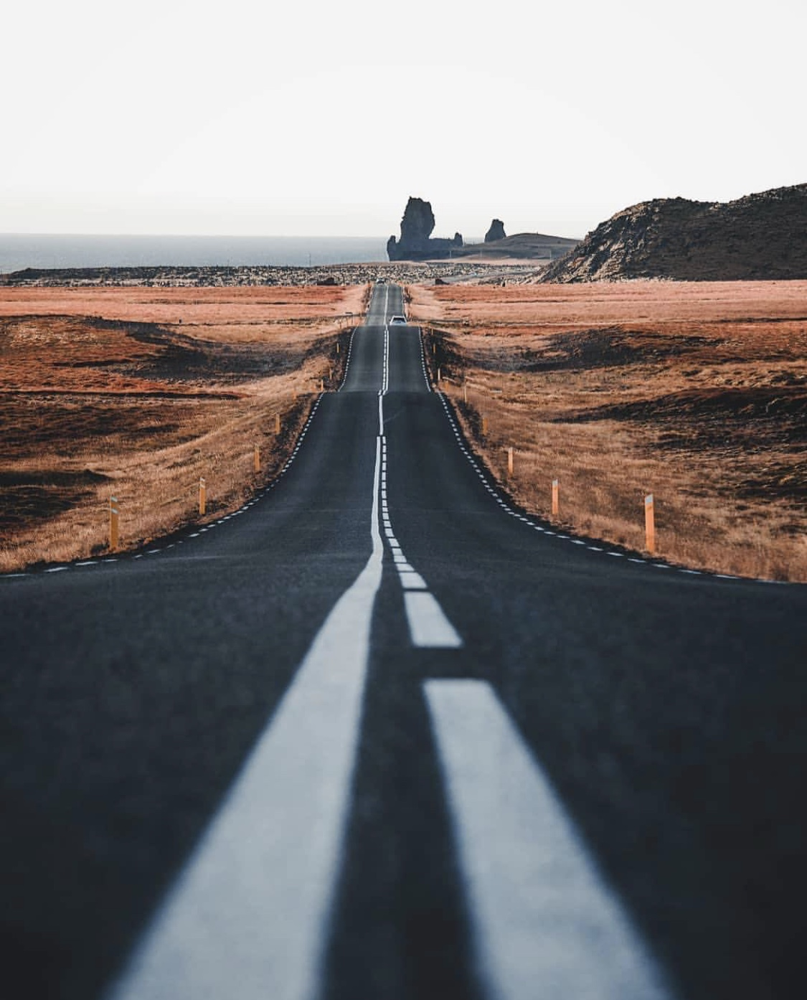

摄影技巧是指摄影作用的技巧，使用后可以使拍摄出的图片更为美观。摄影（Photography），一词是源于希腊语 φω phos（光线）和 γραφι graphis（绘画、绘图）或γραφη graphê，摄影是一门技术，同样也是要经验的积累。
真正的摄影家所具备的能力是把日常生活中稍纵即逝的平凡事物转化为不朽的视觉图像，因此在光学摄影的过程中就必须要掌握相应的摄影技巧，这样才能拍摄出令人称奇的美丽照片。
很多朋友拍美景的时候可能只是站着，但是低角度拍摄出来的照片总会让人大吃一惊，只不过可能需要你蹲着或者趴着，用这个角度拍摄出来的效果是超乎寻常滴。在拍摄之前要先选好拍摄的对象，然后找一个比较好的低角度进行拍摄，也可以通过手机的支点在地面上保持平稳避免抖动。有时也需要利用到画面中的一些元素，比如列车轨道，或者其他的一些点，这都能更好的点缀照片。除了这种角度的拍摄技巧，还需要你的想象力，把手机放在任何地方用低角度的方式进行拍摄，把手机倒放可以让视角更接近地面。
Read More

仰角拍摄方法
如果你不知道拍什么，也可以通过周围的一些事物来寻找拍摄素材，而常见的基本上都是建筑，树还有天空。不管你是在车水马龙的城市街道上，还是在一片生机的树林里，都可以通过仰角拍摄的方法来捕捉不一样的画面。如果是拍建筑物，一定要注意到的是在画面中一个角或者四个角要有建筑物的呈现，这样会让照片看起来很有延伸感。仰角的拍摄可以给人一种全新的视觉感，因为很多少平时很少会去关注脑袋上方的风景，所以学会仰角拍摄，就又打开了一个新的视觉世界。
仰角都会说了，那肯定少不了俯视喽！套路还是一样，但是说到俯视，很多人就会想到鸟瞰的画面，就会认为俯拍的方式是要去很高的地方才能拍摄，但这样想就太有限制了，如果有航拍器的话还可以，没有的话那你就这能花式俯拍喽~
如果说你上班的楼层很高的话，你就可以通过俯拍的方式来拍摄眼前城市的美景，各式各样的建筑会让照片看起来更加震撼。当然楼梯也是俯拍的好地方，平时我们只是前往目的地，回家的时候会走，很少会去留意楼梯上也会有不一样的视觉效果，找个高一点的楼层，从楼梯中间的空隙俯视，把手机的摄像头和地面尽量保持平行，如果可以拍到底部的话就更好了，这么拍下来之后，效果也是很不错的！
如果在飞机上的话，在飞机高度差不多的时候，把手机尽量的在紧贴窗户的情况下保持一个相对水平的位置，来实现真正的鸟瞰视角，在飞机起飞后和降落前的时间内，就是拍摄照片的最好的时机。
反射和倒影可以在视觉上带来不一样的效果。 而实际上，通过反射可以把自己的形象变成一个艺术品。只要大家善于观察！现如今高楼大厦到处都能看到有反射和倒影的地方。街道地面上的水坑里，湖面上，大楼的窗户，还有太阳眼镜。这种拍摄视角可以让人体验到不同的全新拍摄效果，让照片也变得更有趣。
在任何地方都可以找到反射和倒影。在城市街道上的一个水坑里，一个纯净的湖泊，一副镜面太阳镜，一座建筑的窗户。反射和倒影提供了强大和经常有趣的方式提供新的视角，让你的照片变得有趣起来。
通过窗户上的玻璃，能拍摄出一些不一样的惊喜。比如上面这张照片，玻璃反射出了城市街道的繁忙景象。很多照片可以让别人有一种感同身受的体验。还拿上面这个照片为例，人物、街景，季节的话应该是秋季，会让人联想到自己本身。每天生活在繁忙的城市里上班下班，对生活由心而发的感叹。所以一张好的照片要用心去拍，找好角度，能给人的内心带去震撼！
如何掌握黑白摄影技巧？因为黑白照片没有色彩的区分，摄影作品中的多种元素很难脱颖而出。因此，摄影师必须加倍注意用光，纹理和构图等基本框架。首先，利用光线和阴影来强调黑白摄影作品的主题，这既是考验拍摄者的实力，也是黑白摄影的弱点。在足够的光线条件下，照片或许是完美的，然而，错误的光线会导致成像过暗或拍摄失败。由于光线直接影响作品的成像效果，两个相同主题的照片可以在一天的不同时间去拍摄。
体现黑白摄影最大魅力的地方，莫过于拍摄人物造型。通过细微的层次调整，可使平时肉眼无法注意到的地方得到强化，让肌肤上的每条纹理都清晰可见。


{kind=link}
{kind=link}
{kind=link}
{kind=link}
{kind=link}
{kind=link}
{kind=link}
{kind=link}